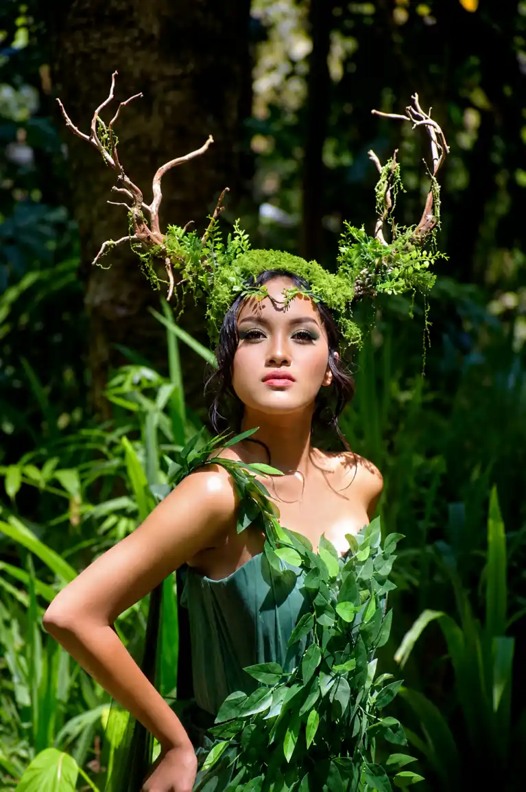
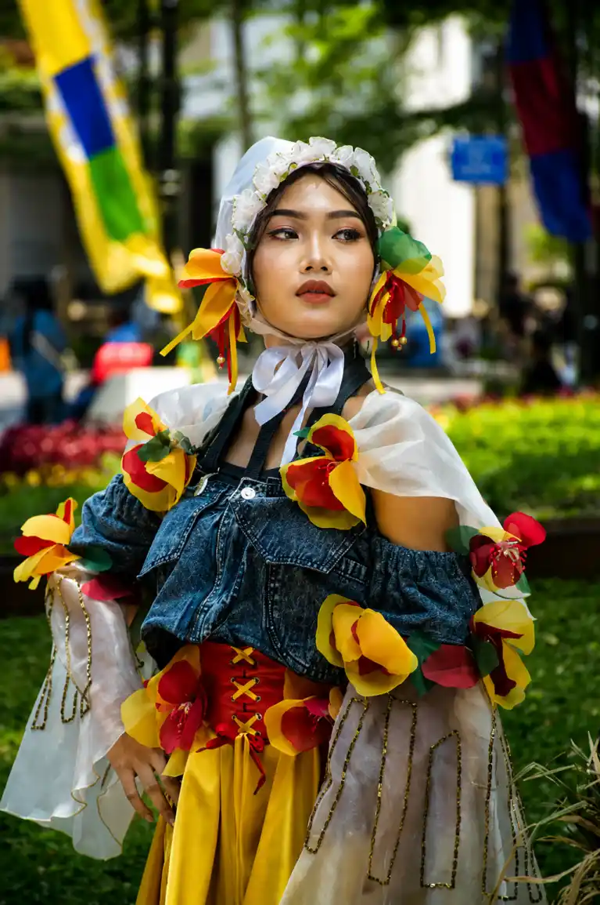
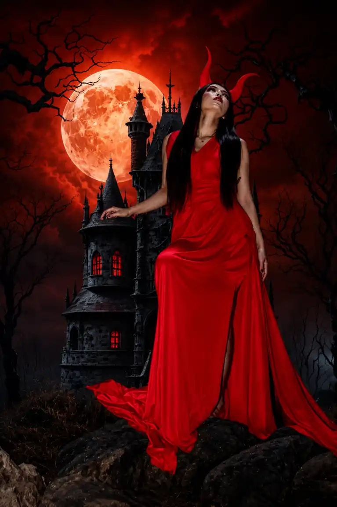

Hermawan merupakan fotografer konseptual profesional di balik akun Conceptual Projects yang dikenal melalui karya visual sinematik, dramatis, dan penuh storytelling artistik.
Dalam setiap karyanya, fotografi tidak hanya berfungsi sebagai media dokumentasi, tetapi juga sebagai ruang untuk membangun dunia imajinatif yang penuh karakter, emosi, dan atmosfer visual yang kuat.
Profil Singkat
Nama: Hermawan
Bidang: Fotografi Konseptual & Visual Storytelling
Fokus: Fantasy, Gothic, Portrait Conceptual, Cinematic Photography
Project: Conceptual Projects
Sertifikasi Profesional
Komitmennya di dunia visual diperkuat melalui Sertifikasi Teknik Fotografi Spesialisasi dari LSP INSCINEMA BNSP.
Sertifikasi tersebut menjadi pengakuan atas kompetensi teknis dan artistik dalam penguasaan pencahayaan, pengolahan konsep visual, hingga produksi fotografi kreatif sesuai standar industri.
Karakteristik Visual
Karya-karya Hermawan dikenal memiliki nuansa sinematik dengan pendekatan pencahayaan dramatis dan kontras tinggi (chiaroscuro).
Dominasi warna gelap, atmosfer misterius, dan detail artistik menjadikan setiap frame terasa seperti potongan adegan film fantasi.

The Forest Nymph ConceptEksplorasi Tema Visual
The Forest Nymph
Konsep peri hutan dengan sentuhan alam liar, gaun dedaunan, dan ornamen ranting pohon yang menciptakan suasana magis dan elegan.
Fashion Carnival & Avant-Garde
Eksplorasi busana kreatif luar ruangan yang memadukan elemen kasual modern dengan sentuhan teatrikal, menghasilkan visual street fashion yang berani dan ekspresif.

Fashion Carnival & Avant-Garde ConceptDark Fantasy & Gothic
Salah satu identitas visual terkuat dalam karya Hermawan adalah eksplorasi fantasy gelap dengan nuansa gothic, kastil tua, bulan purnama, dan karakter teatrikal.
The Cave & Myth
Sesi pemotretan eksotis di dalam gua batu dengan pencahayaan minimalis untuk membangun suasana mistis dan artistik.

Dark Fantasy & Gothic ConceptKolaborasi dan Detail Artistik
Kekuatan utama karya Hermawan tidak hanya terletak pada teknik fotografi, tetapi juga pada detail artistik yang matang.
Mulai dari wardrobe, makeup, properti visual, hingga pembangunan atmosfer dilakukan secara terencana untuk menciptakan pengalaman visual yang imersif.
Setiap sesi pemotretan terasa seperti sebuah produksi seni visual dengan identitas yang kuat dan penuh karakter.
Visual Storytelling
Di tengah perkembangan fotografi digital modern, Hermawan menghadirkan pendekatan visual storytelling yang tidak hanya mengejar estetika, tetapi juga membangun emosi dan narasi di dalam setiap karya.
Bagi model, kreator, komunitas, maupun brand yang ingin menghadirkan visual unik, teatrikal, dan sinematik, karya-karya dari Conceptual Projects menjadi representasi bagaimana imajinasi dapat diwujudkan menjadi mahakarya visual.
← Kembali ke Info Komunitas